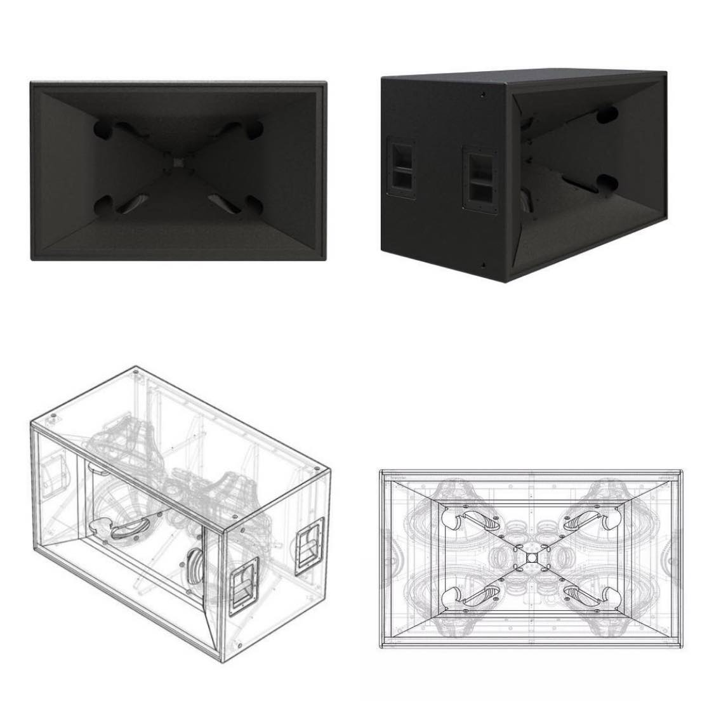
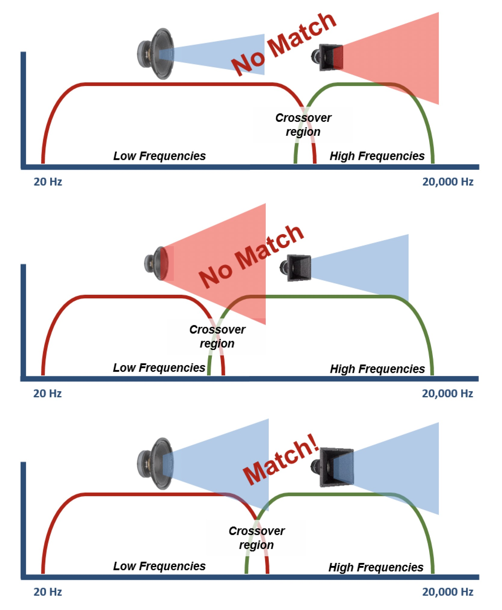
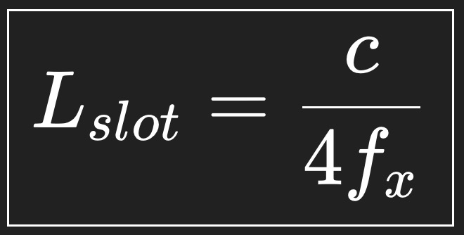
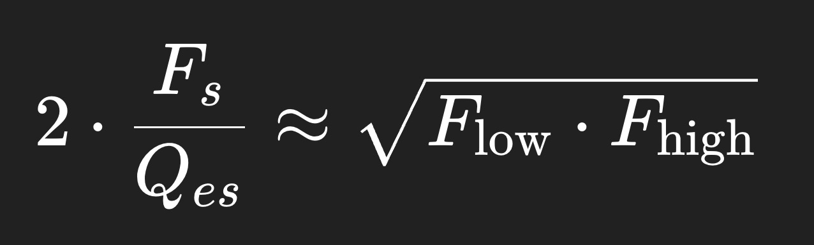
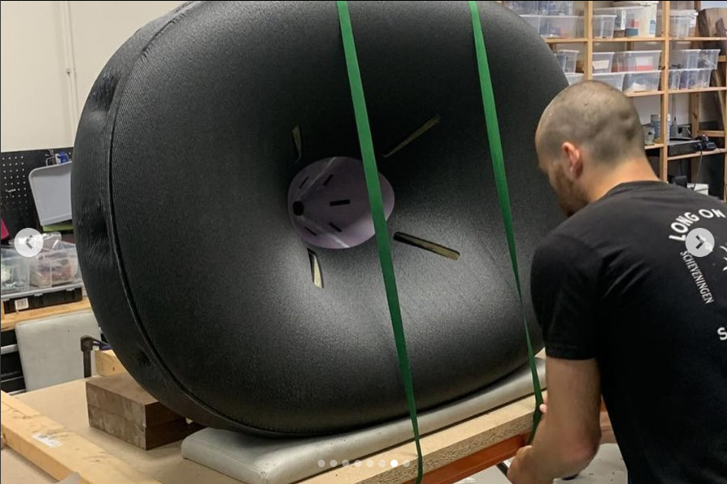
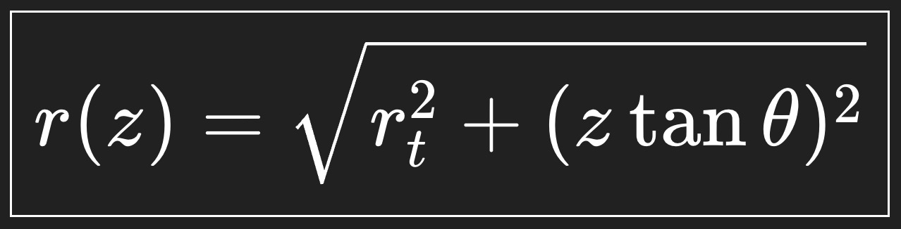
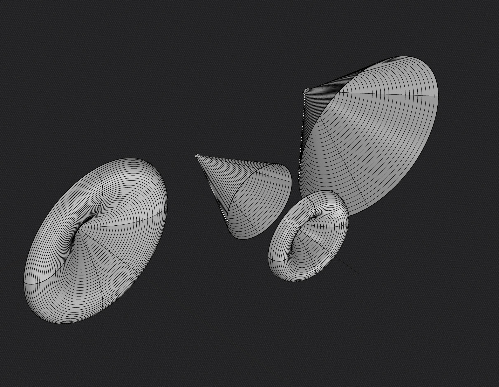

A multi-entry horn (MEH) speaker combines multiple drivers (woofers, mids, tweeters) into a single horn's throat, acting as one large, coherent sound source for excellent directivity, efficiency, and consistent pattern control, avoiding the lobing issues of traditional speakers by acoustically aligning drivers within the horn, popular in pro audio (Danley's Synergy Horn, JW Sound's JMOD) and high-end DIY. These designs scale well, use unique configurations (like woofers firing into horn flares) to manage different frequencies, and aim for a single acoustic point source.

Danley Sound SH50
JW DIY MEH
Here's Mmy research notes for wanting to design a circular MEH with Silence Please:
Oblate Spheroidal and Constant Directivity Waveguides/Conical Constant Directiviy Waveguides are good for MEH because of the wavefront must be similar as it expands from the throat of the horn to the mouth of the horn to keep the acoustic impedence the same. Round horns tend to lose directivity control more gradually at low frequencies, reducing loading earlier than rectangular or optimized shapes. Slight asymmetry can benefit directivity by reducing diffraction. The acoustic impedence must stay the same or change slowly as the horn expands. The angle of the wall of the horn matters more than a specific mathmatical curve, MEH are not like tractrix or exponetial horns. Th Oblate Spheroidal mouth loads the compression driver at the throat and controls directivity and dispersion at the mouth, for smooth on and off-axis response. When creating mounting plates for the driver remember to desing a cavity around the surround/suspention to allow for driver escursion, to the depth of the drivers Xmax, so that the driver surround has space and is not pressed up against any surface.

When dividing the frequency range of the drivers and arrays you want them to be as equal apart from eachother as possible for proper dispersion. IE you dont want the midrange going from 100hz to 6khz, the dispersion wont be uniform.
The slots must be acoustically small.
Slot dimension < ~¼ wavelength at the highest frequency that driver plays. The total slot area = 25% of cone Sd. * Smaller → compression + distortion * Larger → slot becomes a radiator → breaks summation. If you have 4 mids, that area is split across 4 slots. The slots should be wide and short, instead of tall and skinny. The tall slots act as waveguides, but narrow slots will whistle and chuff. 3:1 or 6:1 ratios for the slot dimentions are good. The driver should be AS CLOSE to the slot as possible, and can be champhered on the inside to guide to the slot exit, and avoid chuffing. Long paths from the driver, or depths for the slots can lead to different acoustic/imedience loading as it acts as another horn path/tube/resonator. 1 or two slots per driver is best. 2 slots for the woofers and 1 slot for the midrange drivers each also works. The enclosure must be sealed for better low freq loading and imaging. Ported enclosures introduce phase issues and the MEH is already an efficient design.
The slot position along the horn path is determined by the path length. Place the slots where the midrange acoustic center is time-aligned to the HF diaphragm at the listening axis.

Lslot (distance from compression driver) = c(speed of sound : 343 meters per second) / 4 * fx (crossover freq between midrange array and compression driver)
This 1/4th wavelength condition ensures in phase summation, minimal lobing and stable polar response. Its the same to calculate the slot distance between the Mid -> Woofer
Midrange example: 4x 8ohm drivers. Wire 2 series pairs in parallel to get a total impedence of 8ohms. For 2 8ohm woofers, in parallel makes 4ohms. Best for each PA to be Tri-Amped, crossover stuff is complicated and should be done with DSP and not passive, but there are passive crossover calculators that can help if it must be.

2 * Fs/Qes = square root of Flow * Fhigh
Fs - Driver’s resonant frequency (in Hz). This is the natural frequency where the driver’s mechanical and electrical system “wants” to vibrate.
Qes - Electrical Q of the driver at resonance. Lower Qes means the driver is electrically “damped” more; higher Qes means it’s more resonant.
Flow - Low cutoff of the bandpass you want.
Fhigh - High cutoff of the bandpass.
2 * Fs/Qes : This is basically a way to estimate the “effective midrange frequency” of the driver when placed in a bandpass system. A driver with a higher Fs or lower Qes will push the bandpass center freq higher. Multiplying by 2 is part of the empirical adjustment to line it up with the geometric mean of the desired bandpass.
The square root of Flow * Fhigh is the geometric mean of the desired bandpass. That’s the “target” frequency you want the driver’s resonance to roughly align with inside the bandpass system.
For example, say you want a midrange array from 200hz to 1400hz -> geometric mean is 529hz. Suppose you have a driver with Fs of 164hz and Qes of 0.6. 2 * 164/0.6 = 546hz, which is close enouph to your midrange geometric mean to work for your system. Higher Fs → raises the bandpass center. Lower Qes → broadens the peak, smoother response. Higher Xmax → allows more power handling without port compression

Oblate Spheroidal horn desing by addit audio
Standard setup: 1-2in compression driver (x1). 4 inch midrange drivers (x4). 15in midrange drivers (x2).
This gives you a single curve to revolve for the horn geometry.

z = Total distance from the throat.
r(z) = Radius of the horn wall at that point. Every point plotted for the curve is (z, r)
z = 0 is right at the compression driver exit.
θ is the coverage half-angle. If were using 50deg then it will equal 25deg.
tan(θ) = how fast the horn spreads. (if tan(25deg) = 0.466 then for every 1 mm you go forward, the horn wants to grow 0.466 mm outward)
rt = the radius of your 1" (12.7mm) compression driver
Rhino Python Script (type EditPythonScript):
This is for a R-OSSE Acoustic Waveguide curve! The horn can reach the same mouth radius and directivity with a shorter axial length by curving faster near the mouth, rather than continuing the long OS exponential flare all the way:
